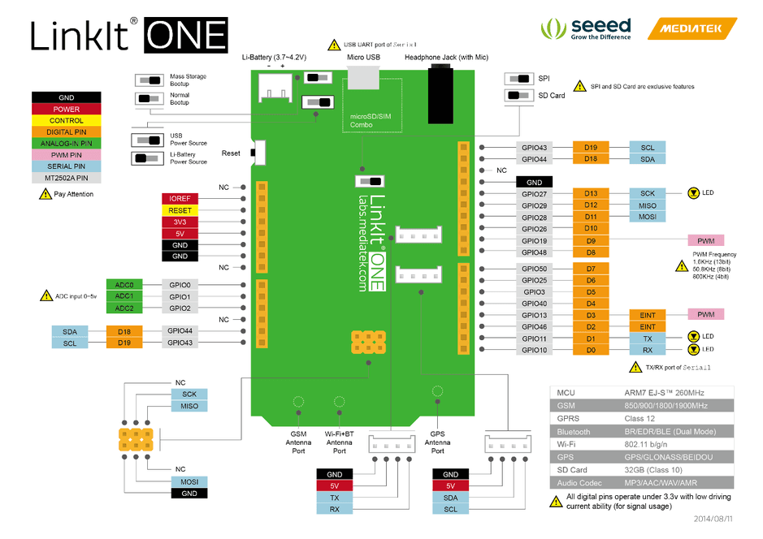
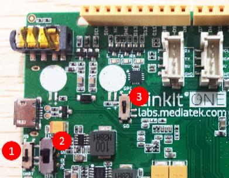
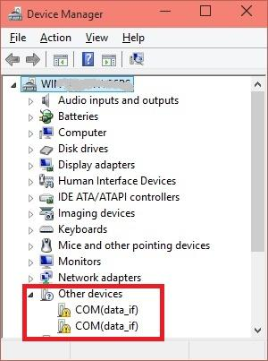
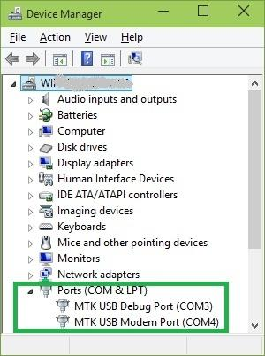
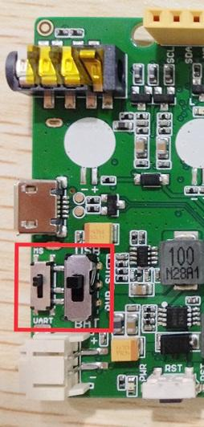
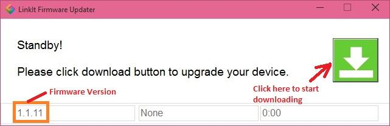
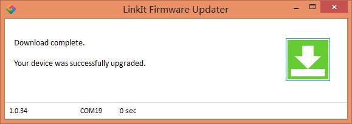
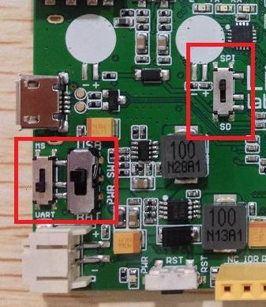
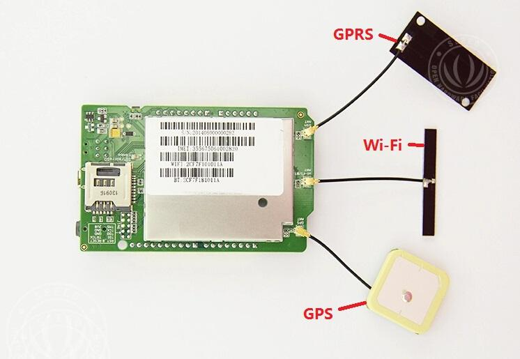
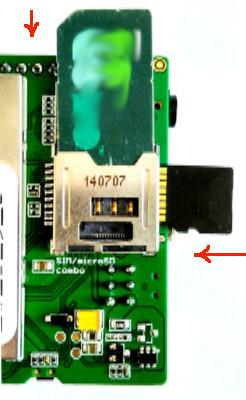

The LinkIt ONE development platform is an open source, high performance board for prototyping Wearables and IoT devices. It is based on the world's leading SoC for Wearables, MediaTek Aster (MT2502) combined with high performance Wi-Fi (MT5931) and GPS (MT3332) chipsets to provide you with access to all the features of MediaTek LinkIt. It also provides similar pin-out features to Arduino boards, making it easy to connect various sensors, peripherals, and Arduino shields.
LinkIt One is an all-in-one prototyping board for IoT/wearables devices. Integrating GSM, GPRS, Wi-Fi, GPS, Bluetooth features into a basic Arduino form factor.
LinkIt ONE is a co-design product by Seeed Studio and MediaTek. It brings together both parties' technology in open hardware and industrial leading reference designs for Wearables and IoT devices to create a powerful development board.
Notes:
LinkIt ONE board comes with a lot of features and its SDK(Software Development Kit) is quite comprehensive. Read this document throughly once before using the board. Being a co-design product basic level Technical Support for hardware is provided at Seeedstudio LinkIt One Forum. Advanced Technical support is available at MediaTek LinkIt One Forums. These forums have a good number of FAQs about this board.Please search solutions for your requirements/issues first before posting questions for saving your time.

| Parameter | Value |
|---|---|
| Chipset | MT2502A (Aster, ARM7 EJ-S (TM) ) |
| Clock Speed | 260MHz |
| Dimensions | 3.3x2.1 inches |
| Flash | 16MB |
| RAM | 4MB |
| DC Current Per I/O Pin | 1mA |
| Analog Pins | 3 |
| Digital Output | 3.3V |
| Analog Input | 5V |
| UART | Software based(Serial) ,also known as USB Modem Port and Hardware Serial(Serial1, D0&D1) |
| SD Card | Up to 32GB(Class 10) |
| Positioning | GPS(MT3332) |
| GSM | 850/900/1800/1900 MHz |
| GPRS | Class 12 |
| Wi-Fi | 802.11 b/g/n |
| Bluetooth | BR/EDR/BLE(Dual Mode) |

There are 3 slide switches on LinkIt ONE which are used to configure the function/working mode :

| Switch No. | Functionality | Position 1 - Functionality | Position 2 - Functionality |
|---|---|---|---|
| 1 | Program Mode | MS： In this position, when connected to PC, LinkIt One board will be shown as 10MB USB drive. The program will not execute in this mode. Any file that is copied to this drive can be read via the code. | UART：This position is used to set the board to program mode. Firmware can be uploaded in this mode. |
| 2 | Power | BAT： Board powered by Li-ion Battery. To charge battery, set the switch to this position and connect the board to PC. | USB：Board powered by USB port. Set the switch to this position when there is no battery connected to program the board. |
| 3 | SD/SPI | SPI：This position allows access of external SPI pins (D10 - D13) | SD：This position allows the code to access SD card. This mode also disables access of SPI pins (D10-D13). |
Note that DO take care as you handle USB micro type-B socket, or you might break the socket off.
| No. | Step | Read more |
|---|---|---|
| 1 | Install Arduino IDE 1.5.7 Beta (Windows or MAC OS X version) | here |
| 2 | Register on MediaTek Labs. | |
| 3 | Download Linkit Developer's Guide and read. | |
| 4 | Install LinkIt SDK for Arduino IDE (Windows or MAC OS X). | here |
| 5 | Install LinkIt ONE drivers. | here |
| 6 | Update the on-board firmware version. | here |
| 7 | Open Arduino IDE, Select LinkIt ONE board and start coding. | here |
| 8 | Connect GSM, GPS and WiFi/BT antennae to LinkIt One board | here |
| 9 | Insert SIM and Micro SD Card | here |
| 10 | Explore examples and Happy making! |
Download latest Arduino IDE. For more advanced topics, follow MediaTekTM instructions


NOTE: There is no official Windows 10 driver yet. Windows 10 users can manually select the Windows 7 driver files from \LinkIt_ONE_IDE\drivers\mtk from Device Manager. This is known to work on few PCs.
The firmware of LinkIt ONE board needs to be updated once in a while. Latest LinkIt ONE SDK comes with a version of firmware.




There are three antennae provided with LinkIt ONE. They are used for:
Connect the antenna as the following image.

Note:
LinkIt ONE accepts standard size SIM Card and Micro SD Card. Insert them as per the following image:

LinkIt ONE SDK comes with many examples / sample code to use peripherals like GSM, GPRS, WiFi, BT, Audio, GPS etc. Explore them first and read about API documentation. API documentation are available in User Guide and API References site
The Sidekick Basic Kit for LinkIt ONE is designed to be used with your LinkIt ONE board. This kit will help you quickly get along well with the platform of LinkIt. It includes many of the most popular accessories for DIY projects : like Breadboard, Jumper wires, Color LEDs, Resistors, Buzzer, etc. All these come in a handy box, which is easy to transport and mimimises clutter. The kit includes a complete guide that will familiarize you with a wide range of electronic components while you create small, simple, and easy-to-assemble circuits. There are 10 different courses outlined that will offer a best way for beginner to get familiar with LinkIt ONE.
SKU:110060038
If you want to make some awesome projects by LinkIt ONE, here's some projects for reference.
Instructables is really an awesome place to share your awesome project. There’s so many makers here to share their works.
I had made many instructable as well, I will feel excite when my instructable get a large views or favorites. Especially when you first post your instructable, you will always go to the page and see if someone like it.
I still remember when I post my first instructable years ago, it’s a project about Arduino, I made a phone with Arduino. It’s called ArduinoPhone, even today I can get some comments from it, and I am glad to help others to make their own phone with Arduino.
Now, I will share my latest instructable, it’s a beautiful device that you can put it on the desk. It’s named Instructables Indicator. With this instructable, you can know if people like your instructable, if your instructable get featured.
This application contains the below function:
Connecting to Wi-Fi
If you like Instructables and write instructables, you will like this idea. I will share the process to make it, as well as the code, all things is open sources.

If you need a acrylic case to protect your LinkIt ONE.
There's a tutorial to help you to make one.

Schematic / Design Files:
Software:
Datasheets and User Guides:
Getting Help
More
See Also: Sidekick Base Kit for LinkIt ONE
Copyright (c) 2008-2016 Seeed Development Limited (www.seeedstudio.com / www.seeed.cc)